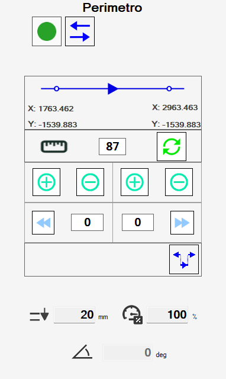
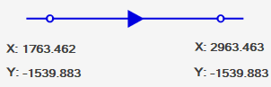
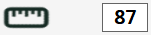
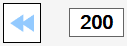
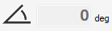
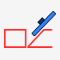
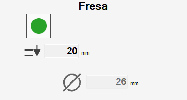
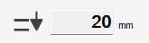
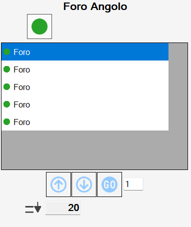

Questo pannello permette all’operatore di modificare alcune caratteristiche di un taglio.

Pulsanti
Nell’angolo in alto a sinistra, è possibile modificare l’attivazione del taglio.
 | Attiva/Disattiva taglio |
In base alla tipologia del taglio selezionato, verranno visualizzate versioni diverse di questo pannello.
Tagli con disco
Selezionando un taglio eseguito con disco, lineare o ad arco, viene visualizzato il seguente pannello:

I tagli eseguiti con disco sono caratterizzati da un punto iniziale ed un punto finale. Le frecce ne definiscono il verso di percorrenza, da inizio a fine.

Sulla tabella riportata sotto, vengono riportati i pulsanti con cui l’operatore può modificare le caratteristiche del taglio:
 | Inverti verso del taglio |
 | Quantità di allungo |
Calcola scodo | |
Allunga taglio | |
 | Accorcia taglio |
 | Allunga estremo iniziale fino a bordo lastra |
 | Allunga estremo finale fino a bordo lastra |
Allunga tagli corti |
Vengono inoltre visualizzati alcuni dati relativi all’esecuzione del taglio.
 | Affondo |
 | Velocità percentuale |
 | Inclinazione |
Modificare il taglio dall’area di lavoro
Selezionando un taglio sull’area di lavoro e premendo il pulsante destro del mouse, appare una finestra per poter modificare il taglio rapidamente.

I pulsanti corrispondono alle funzioni già elencate. Viene allungato l’estremo del taglio più vicino al punto in cui è stato premuto il pulsante.
Tagli su archi interni
Per tagli su archi aventi curvatura rivolta verso l’interno del pezzo, è necessario tenere in considerazione che lo scodo del disco durante la lavorazione potrebbe rovinare il lato.
Per questo motivo, questi tagli devono essere svolti in modo diverso rispetto a quelli per tagli esterni.

Parametrix propone due modalità per tagliare archi interni, selezionabili con il pulsante che si trova in alto a destra.
 | Arco inclinato |
 | Arco sfasato |
Di default Parametrix consiglia di impostare la lavorazione di questi tagli con la modalità “arco inclinato“.
Se non è desiderata, è necessario cambiare la modalità di esecuzione di ogni taglio singolarmente.
Ogni modalità di lavorazione possiede pregi e difetti:
Archi inclinati consentono una finitura migliore sul risultato finale, che quindi necessiterà meno lavoro di manodopera per venire completato.
Tuttavia richiedono uno sforzo maggiore da parte della macchina, e quindi la lavorazione deve essere svolta a velocità ridotte e con più passate.Archi sfasati sono meno onerosi per quanto riguarda la fatica che la macchina deve svolgere per la loro lavorazione, e quindi possono essere svolti a velocità più elevate.
In compenso, lo scodo del disco provoca danni maggiori al materiale, e inoltre il materiale che deve essere asportato in fase di rifinitura manuale è maggiore.
Fori e Fresature
Lavorazioni come fori e fresature consentono un minor numero di modifiche da parte dell’operatore.

Sono disponibili informazioni relative a:
 | Affondo |
 | Diametro utensile |
Ribassi e Fori su vertice
I fori ad angolo e i ribassi sono lavorazioni composte rispettivamente da più fori e fresature. Nel caso in cui venga selezionata una di queste voci, viene mostrato un elenco di tutti i tagli che li compongono.

L’operatore può decidere di attivare o disattivare ciascun taglio singolarmente utilizzando il pulsante su ogni voce dell’elenco, oppure se andare ad agire contemporaneamente su tutti i tagli della lavorazione lavorazione con il pulsante in alto.
I pulsanti che appaiono sotto l’elenco permettono di modificare l’ordine con cui i singoli tagli vengono eseguiti.
Spostamento con frecce | |
Spostamento alla posizione desiderata |
Inoltre, l’operatore può modificare la penetrazione della lavorazione attraverso il campo sottostante:
Affondo |